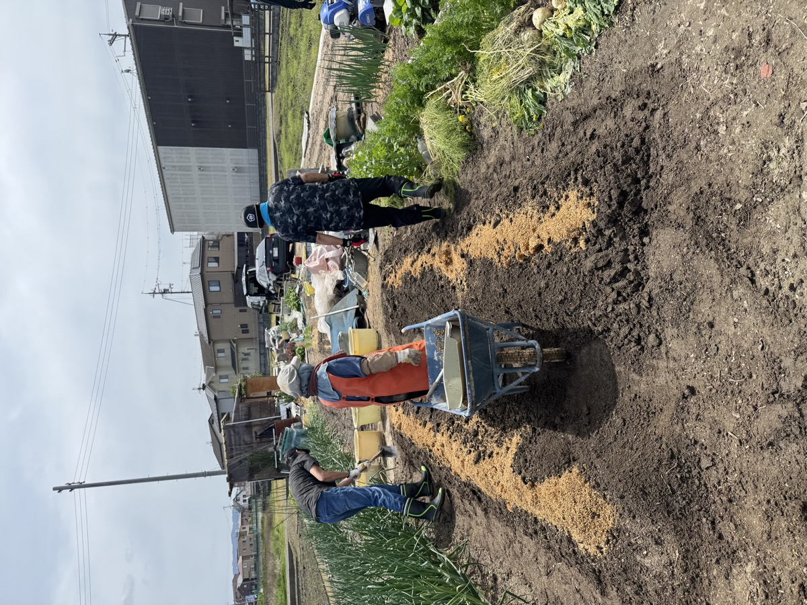
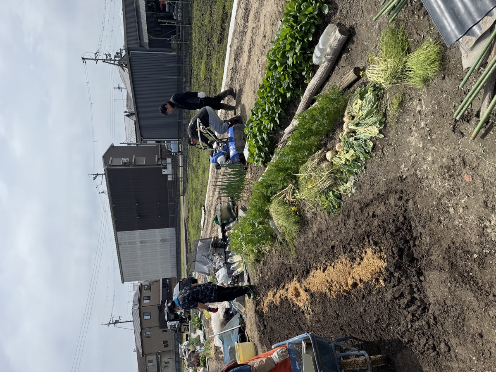
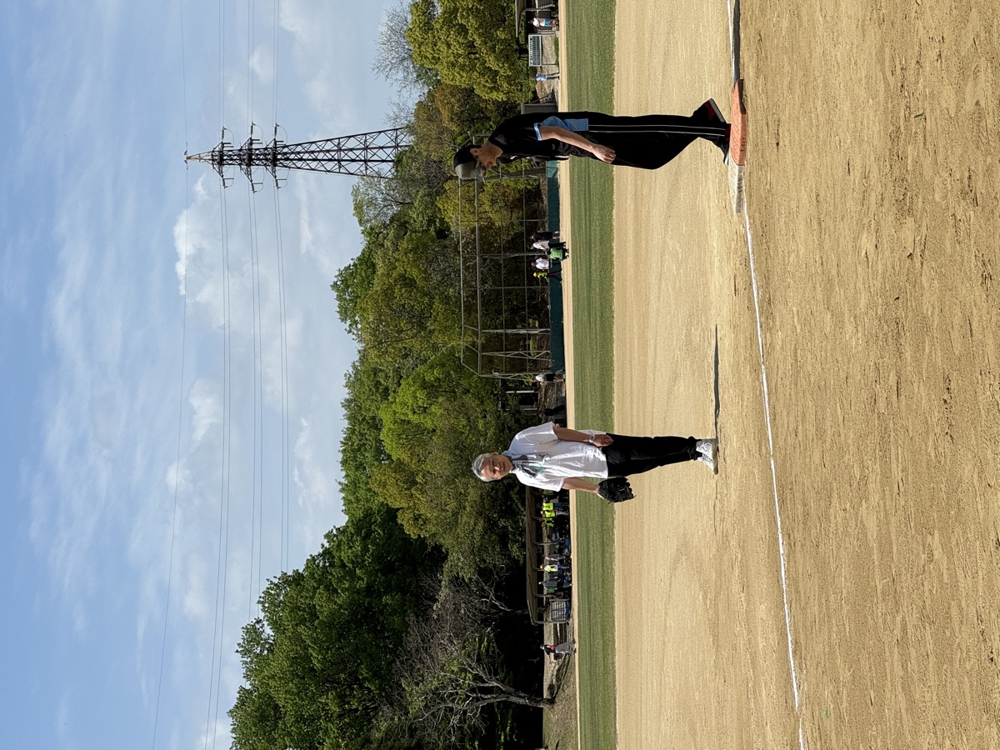
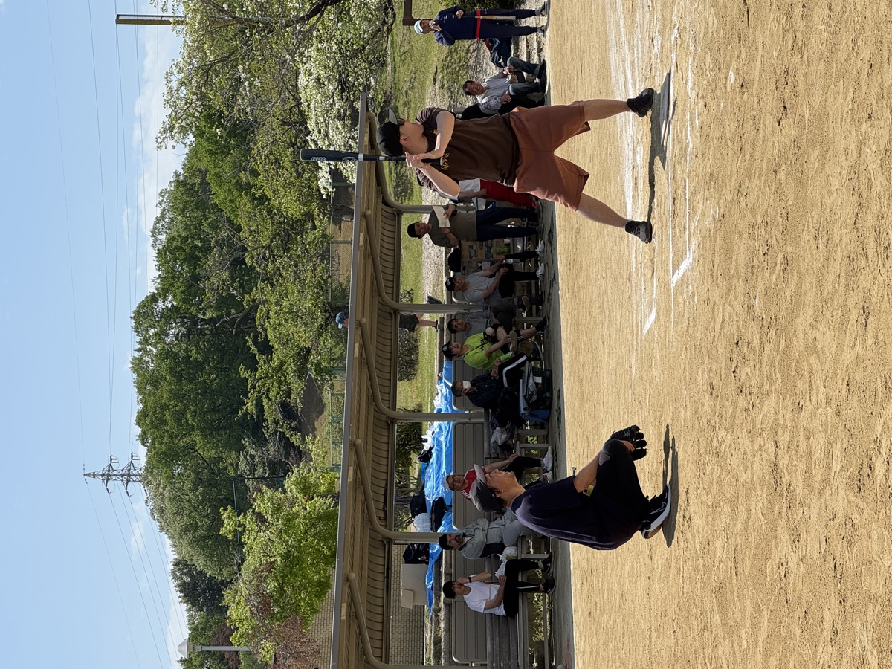
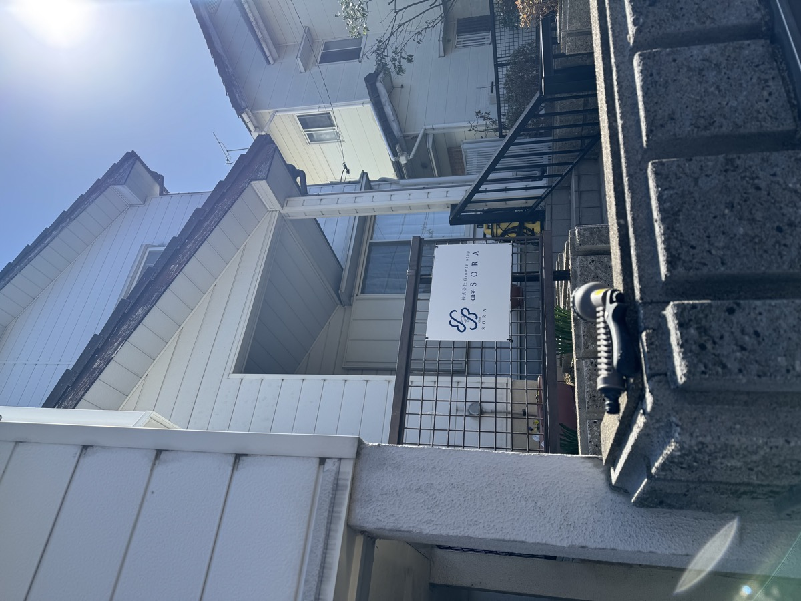

依存症からの回復を、仲間とともに。
CASA SORAは、あなたが自分らしく生きるための
安心できる「家」です。
About
「CASA」はイタリア語・スペイン語で「家」、「SORA」は日本語で「空」。広い空のもと、ひとりひとりが自分のペースで回復できる場所——それがCASA SORAです。
アルコール・薬物・ギャンブルなどの依存症は、意志の弱さではなく「脳の病気」です。適切な環境と人とのつながりがあれば、回復できます。
私たちは、治療後の「生活の土台」をともに築くグループホームとして、滋賀県大津市で活動しています。
Features
孤立せず、焦らず、あなたのペースで回復できる環境を整えています。
同じ経験を持つ仲間と生活をともにすることで、孤独感が和らぎ、お互いに支え合える関係が生まれます。
日常生活のリズムを整えながら、就労や社会復帰に向けたステップを、スタッフが一緒に考えます。
滋賀県大津市の落ち着いた環境の中で、生活の基盤を安定させながら回復に集中できます。
Gallery





Services
依存症の回復支援を中心に、障害福祉・生活困窮など、さまざまな困難を抱える方を幅広くサポートしています。
アルコール・薬物・ギャンブルなどの依存症を抱える方が、仲間とともに安心して回復できるグループホームを提供します。
身体・精神・知的などの障害をお持ちの方の日常生活をサポート。福祉サービスの利用支援や、生活の安定に向けた個別対応を行います。
経済的な困難を抱える方に対し、住まいの確保や生活費の相談、各種制度（生活保護・就労支援など）への橋渡しを行います。
自立準備ホーム
CASA SORAは、法務省が推進する自立準備ホームとして登録されています。刑事施設や少年院を出た後、帰る場所がない方に対し、住まいと日常生活のサポートを提供します。
保護観察所と連携し、社会復帰を目指す方が安心して生活をスタートできる環境を整えています。依存症の回復支援と組み合わせることで、より包括的なサポートが可能です。
退所後すぐに安全な住まいを確保。住所不定の状態を解消します。
食事提供や日常生活のサポートで、生活リズムを整えます。
法務省・保護観察所と連携し、適切な支援体制を構築します。
仕事探しや手続きなど、社会復帰に向けた支援も行います。
Flow
まずはお電話でお気軽にご相談ください。一緒に最善の方法を考えます。
まずはお電話でご状況をお聞かせください。秘密は厳守します。
施設の見学と個別面談を行い、入居が適切かどうかを確認します。
契約・生活ルールの確認を行い、入居日を決めます。
仲間・スタッフとともに、回復への新しい生活が始まります。
FAQ
Blog
スタッフの研修・イベントなど、CASA SORAの日々の活動をお届けします。
Contact
一人で抱え込まないでください。どんな小さな疑問でも、お気軽にお電話ください。
スマホで読み取るとすぐ開けます